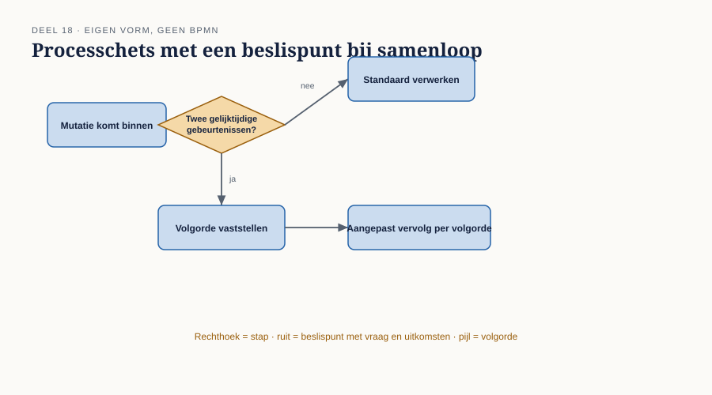
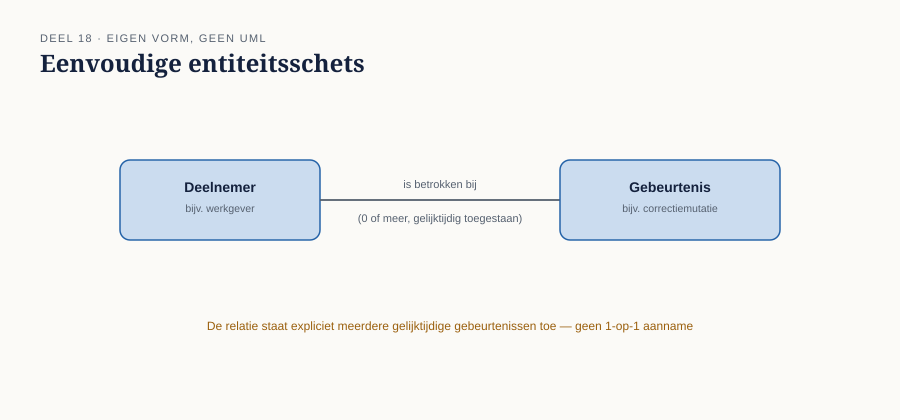
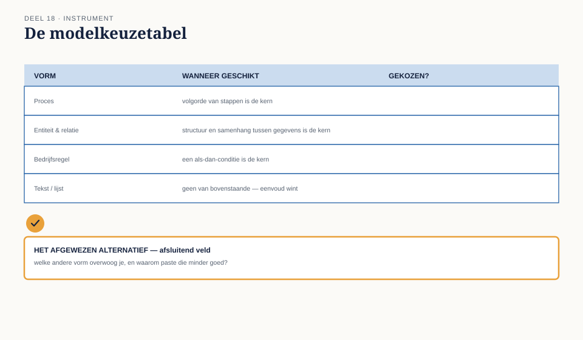

Cursus Businessanalyse · Niveau 2 (CCBA) · Deel 18 van 30
Eén requirement, vier vormen.
Tot nu toe in dit niveau ging het vooral om requirements als zinnen: opgehaald, getraceerd, geprioriteerd. Dit deel gaat over de vorm waarin u een requirement uiteindelijk vastlegt zodra tekst alleen niet meer volstaat — als proces, als bedrijfsregel, als gegevensstructuur, of als gebruikersverhaal. Met de modelkeuzetabel maakt u die keuze systematisch, inclusief wat u ermee opgeeft.
6secties
±3,5uleestijd + werkboek
6controlevragen
4vormen
Positionering. Deze cursus is een voorbereiding op het CCBA-examen van IIBA en uitdrukkelijk geen vervanging van het officiële examenmateriaal — A Guide to the Business Analysis Body of Knowledge (BABOK Guide) en The Business Analysis Standard, beide gratis te raadplegen via iiba.org. Alle formuleringen, figuren en werkvormen in dit materiaal zijn van Ductus; studeer voor het examen altijd óók de bron.
Niveau 2: 11 De analyseaanpak kiezen → 12 Governance en informatiebeheer → 13 Strategieanalyse in de praktijk → 14 Elicitatie I → 15 Elicitatie II → 16 Traceren en onderhouden → 17 Prioriteren en wijzigingen → 18 Specificeren en modelleren (hier) → 19 Verifiëren en valideren → 20 Agile business-analyse → 21 Oplossingsevaluatie → 22 Examentraining CCBA + portfolio
01
Waar dit deel over gaat
⏱ 8 min
Tot nu toe in dit niveau ging het vooral om requirements als zinnen: opgehaald, getraceerd, geprioriteerd. Dit deel gaat over de vorm waarin u een requirement uiteindelijk vastlegt zodra tekst alleen niet meer volstaat — als proces, als bedrijfsregel, als gegevensstructuur, of als gebruikersverhaal. Dit deel behandelt elke vorm kort maar volledig zelfstandig, op het niveau dat een business analist nodig heeft om een bewuste keuze te maken. Voor de volle diepte van elke modelvorm verwijst dit deel naar de zustercursussen: procesmodellering en bedrijfsregels naar de BPMN/CMMN/DMN-cursus, gegevensstructuren naar de datacursus.
Aan het eind van dit deel kunt u:
vaststellen of een requirement het beste als proces, regel, gegevensstructuur of gebruikersverhaal wordt vastgelegd;
een eenvoudig model van elke vorm lezen en zelf schetsen op BA-niveau;
uitleggen wat u verliest wanneer u bewust voor één vorm kiest boven een andere;
met de modelkeuzetabel deze keuze systematisch maken en verantwoorden.
02
De casus: hoe leg je "samenloop" vast?
⏱ 10 min
Uit het casusdossier: bevinding B5 uit niveau 1 identificeerde "samenloop van gebeurtenissen" — bijvoorbeeld een uitdiensttreding en een overlijden in dezelfde maand — als een terugkerend probleemgeval.
Femke moet vastleggen hoe het koppelvlak moet omgaan met samenloop. Zij twijfelt over de vorm.
"Ik kan dit als een proces tekenen — eerst dit checken, dan dat. Maar het voelt ook als een regel: als dít én dát tegelijk, dan moet er iets anders gebeuren. En eigenlijk is het ook een gegevensvraagstuk — het systeem moet twee gebeurtenissen tegelijk kunnen vasthouden, wat het nu niet kan."
Merel: "Misschien is het antwoord: alle drie, ieder voor het deel waar het goed in is."
Femkes aarzeling is terecht — samenloop is inderdaad alle drie tegelijk. Dit deel geeft geen formule die dat soort twijfel wegneemt, maar wel een systematische manier om de keuze per aspect te maken in plaats van naar één vorm te grijpen omdat die toevallig het meest vertrouwd aanvoelt.
03
Vier vormen, kort en zelfstandig
⏱ 30 min
Proces
Een proces legt een volgorde van stappen vast, met eventuele vertakkingen en samenkomstpunten. Geschikt wanneer de kern van een requirement zit in wat er wanneer gebeurt, en in welke volgorde.
Een eenvoudige processchets bestaat uit stappen (rechthoeken), beslispunten (ruiten, met een vraag en twee of meer uitkomsten), en pijlen die de volgorde aangeven. Voor samenloop: een proces kan tonen dat eerst wordt vastgesteld of er sprake is van twee gelijktijdige gebeurtenissen, en dat de vervolgstappen daarvan afhangen.

Figuur 18-1 — een eenvoudige processchets met een beslispunt bij samenloop
↗ Voor volwaardige procesmodellering, notatiestandaarden en complexere patronen: de BPMN/CMMN/DMN-cursus.
Bedrijfsregel
Een bedrijfsregel legt een beslislogica vast: gegeven bepaalde condities, welke uitkomst geldt? Geschikt wanneer de kern van een requirement zit in welke uitkomst hoort bij welke combinatie van omstandigheden, los van de volgorde waarin dat wordt vastgesteld.
Een eenvoudige beslistabel bestaat uit rijen (condities) en kolommen (uitkomsten per combinatie). Voor samenloop: een tabel kan per combinatie van gebeurtenissen (uitdiensttreding + overlijden, uitdiensttreding + langdurige arbeidsongeschiktheid, enzovoort) de juiste verwerkingsregel tonen.
Uitdiensttreding
Overlijden
Regel
Ja
Nee
Standaardproces uitdiensttreding
Nee
Ja
Standaardproces overlijden
Ja
Ja, zelfde maand
Uitzonderingsregel: overlijden heeft voorrang, uitdiensttreding wordt geannuleerd
↗ Voor volwaardige bedrijfsregelmodellering: de DMN-module van de BPMN/CMMN/DMN-cursus.
Gegevensstructuur
Een gegevensstructuur legt vast welke gegevens bestaan, en hoe ze zich tot elkaar verhouden. Geschikt wanneer de kern van een requirement zit in wat u moet kunnen vastleggen, ongeacht het proces of de regels eromheen.
Een eenvoudige schets bestaat uit entiteiten (bijvoorbeeld "deelnemer", "gebeurtenis") en de relaties daartussen. Voor samenloop: de kern van het probleem is dat het huidige systeem een deelnemer maar één actieve "gebeurtenis" tegelijk laat hebben — een gegevensstructuur die twee gelijktijdige gebeurtenissen toestaat, lost het probleem op een ander niveau op dan een proces of regel dat zou doen.

Figuur 18-2 — een eenvoudige entiteitsschets — deelnemer, gebeurtenis, met een relatie die meerdere gelijktijdige gebeurtenissen toestaat
↗ Voor volwaardige datamodellering: de datacursus.
Gebruikersverhaal
Een gebruikersverhaal legt een requirement vast vanuit het perspectief van wie het gebruikt, in de vorm: "Als [rol] wil ik [doel], zodat [waarde]." Geschikt wanneer de kern van een requirement zit in het doel van een gebruiker, en de precieze uitwerking nog open mag blijven voor verdere verfijning — typisch in een adaptieve aanpak (niveau 1, deel 4; niveau 2, deel 11).
Voor samenloop: "Als medewerker van Uitvoering wil ik gewaarschuwd worden wanneer twee gebeurtenissen voor dezelfde deelnemer samenvallen, zodat ik niet per ongeluk de verkeerde volgorde verwerk." Dit is geen vervanging van het proces of de regel — het is een andere invalshoek, gericht op wie ermee werkt in plaats van op wat het systeem doet.
Controlevragen
Uit Werkboek deel 18, Opdracht 1 en 2 — kernvraag herkennen bij drie requirements, en zelf een beslistabel schetsen
1R-021 (Indienst & Uitdienst): "Een nieuwe medewerker moet binnen één werkdag een welkomstbericht ontvangen met inloggegevens." Wat is de kernvraag, en welke vorm past het beste?Toon antwoord
Kernvraag: volgorde en timing (binnen één werkdag). Beste vorm: proces, eventueel aangevuld met een gebruikersverhaal voor het perspectief van de nieuwe medewerker. Een beslistabel of gegevensstructuur voegt hier weinig toe — er is geen complexe combinatielogica of structuurvraagstuk.
2R-034 (Salaris & Deeltijd): "Bij een deeltijdwijziging van meer dan 20% wordt automatisch een herberekening van de premie geactiveerd; bij minder dan 20% niet." Wat is de kernvraag, en welke vorm past het beste?Toon antwoord
Kernvraag: combinatielogica (welke drempel triggert welke actie). Beste vorm: bedrijfsregel/beslistabel. Een proces kan ondersteunend zijn (wat gebeurt er ná activering), maar de kern is de regel zelf.
3Schets voor R-034 een eenvoudige beslistabel met minstens drie regels, inclusief het grensgeval van precies 20%. Wat levert dat op?Toon antwoord
Bijvoorbeeld: > 20% → automatische herberekening geactiveerd; precies 20% → grensgeval, nog te verduidelijken of dit onder "meer dan" valt; < 20% → geen automatische herberekening; geen deeltijdwijziging → regel niet van toepassing. Een sterk antwoord signaleert zelf het grensgeval bij precies 20% als iets dat nog moet worden opgehelderd bij de eigenaar van het requirement — dezelfde discipline als "context: aannames" uit niveau 1, deel 9.
04
Kiezen is ook verliezen
⏱ 12 min
Zoals het optieblad uit niveau 1, deel 8 al liet zien: een keuze is pas compleet als u ook benoemt wat u ermee opgeeft. Dat geldt evenzeer voor een modelkeuze.
Kies u voor een proces, dan verliest u scherpte over de precieze combinatorische logica — een proces met veel beslispunten wordt al snel onleesbaar.
Kies u voor een regel, dan verliest u zicht op volgorde en timing — een beslistabel toont niet wanneer iets gebeurt, alleen wat.
Kies u voor een gegevensstructuur alleen, dan verliest u het gedrag — een datamodel toont wat mogelijk is, niet wat er daadwerkelijk moet gebeuren.
Kies u voor een gebruikersverhaal alleen, dan verliest u precisie — geschikt voor een eerste richting, onvoldoende voor een uitputtende specificatie.
Dit is precies waarom Femkes intuïtie in de casus goed was: samenloop heeft elementen van alle vier, en een goede specificatie erkent dat in plaats van er kunstmatig één vorm op te plakken.
Controlevraag
Uit Werkboek deel 18, Opdracht 3 — wat u verliest door een andere vorm te kiezen
1Kies voor R-021 (het welkomstbericht) een bedrijfsregel in plaats van een proces. Wat verliest u daarmee concreet?Toon antwoord
U verliest zicht op de daadwerkelijke opeenvolging van handelingen — wie stuurt het bericht, op welk moment in het indiensttredingsproces, wat gebeurt er als het misgaat — een beslistabel toont alleen een uitkomst gegeven een conditie, niet de weg ernaartoe. Voor een tijdsgebonden requirement als dit is dat een significant verlies.
05
De werkvorm: de modelkeuzetabel
⏱ 20 min
Het instrument van dit deel is de modelkeuzetabel: een sjabloon dat voor een requirement systematisch vaststelt welke vorm (of vormen) het beste past, met expliciete erkenning van wat wordt opgegeven.
Het blad
De vijf velden
Het requirement of de behoefte, in één zin. Kernvraag: gaat dit primair over volgorde (proces), combinatielogica (regel), structuur van gegevens (data), of het doel van een gebruiker (verhaal)? Gekozen vorm(en) — één of meerdere, met motivatie. Wat wordt opgegeven door niet (ook) voor de andere vormen te kiezen. Kruisverwijzing — naar welke zustercursus voor de volle uitwerking, indien relevant.
Het veld dat het verschil maakt
Het lastigste veld
Welk model kies je NIET, en wat zou je daarmee verliezen?
Dit veld herhaalt, in een nieuwe vorm, het principe dat sinds niveau 1 deel 8 door deze cursus loopt: een keuze is pas onderbouwd als het afgewezen alternatief evenveel aandacht krijgt als de gekozen route. Bij een modelkeuze is dat niet anders — en het voorkomt dat een analist een vorm kiest simpelweg omdat die het meest vertrouwd aanvoelt, zoals Sander wellicht sneller naar een proces zou grijpen en Nour sneller naar een gegevensstructuur, ongeacht wat het requirement zelf het beste dient.

Figuur 18-3 — de modelkeuzetabel, met de vier vormen als opties en het afgewezen alternatief als afsluitend veld
Toegepast op de casus
Veld
Inhoud
Requirement
Correcte verwerking bij samenloop van uitdiensttreding en overlijden
Kernvraag
Alle drie: volgorde (wat gebeurt eerst), combinatielogica (welke regel geldt bij welke combinatie), structuur (kan het systeem twee gebeurtenissen vasthouden)
Gekozen vorm(en)
Bedrijfsregel voor de combinatielogica (zie tabel §18.3) + gegevensstructuuraanpassing om twee gebeurtenissen te kunnen vastleggen
Wat wordt opgegeven
Door geen apart procesmodel te maken: minder zicht op de precieze volgorde van handelingen bij Uitvoering — deels ondervangen door het gebruikersverhaal voor de waarschuwing
Kruisverwijzing
DMN-module (BPMN/CMMN/DMN-cursus) voor de volwaardige beslistabel; datacursus voor het gegevensmodel
Controlevraag
Uit Werkboek deel 18, Opdracht 4 — het modelkeuzetabel invullen voor een ander samenloopscenario (tweetallen)
1Vul een modelkeuzetabel in voor samenloop van een deeltijdwijziging en een adreswijziging binnen dezelfde week. Vraagt dit dezelfde combinatie van vormen als het oorspronkelijke samenloopvoorbeeld uit §18.2?Toon antwoord
Nee — waarschijnlijk een lichtere combinatie: dit raakt minder de gegevensstructuur (beide wijzigingen kunnen normaliter al naast elkaar bestaan, in tegenstelling tot twee "gebeurtenissen" die het systeem oorspronkelijk niet gelijktijdig kon vasthouden) en meer een simpele procesvraag (welke wijziging wordt eerst verwerkt, of kunnen ze parallel). Een sterk antwoord constateert dat niet elk samenloopgeval dezelfde combinatie van vormen vraagt — de modelkeuzetabel moet per geval opnieuw worden doorlopen, niet als sjabloon gekopieerd van een eerder, oppervlakkig vergelijkbaar geval.
06
Terug naar de casus
⏱ 10 min
Femkes aarzeling — proces, regel, of gegevensstructuur — bleek geen teken van onduidelijkheid, maar een correcte waarneming dat samenloop alle drie tegelijk raakt. De modelkeuzetabel maakt die waarneming expliciet en navolgbaar, in plaats van de keuze te laten afhangen van welke vorm toevallig het eerst in iemands hoofd opkomt.
Vooruit naar deel 19. Een requirement in de juiste vorm vastleggen is niet hetzelfde als een requirement van voldoende kwaliteit vastleggen. Deel 19 — het tweede tweedagdelen-deel van dit niveau — gaat over verifiëren en valideren: de kwaliteitseisen aan requirements, en de sociale vaardigheid om een requirement af te keuren.
Controlevraag
Uit Werkboek deel 18, Opdracht 5 — kruisverwijzingen gebruiken (plenair)
1Op welk moment zou u, als business analist, een collega uit de proces- of datacursus-wereld erbij halen in plaats van het zelf op BA-niveau af te maken? Formuleer een vuistregel.Toon antwoord
Een bruikbare vuistregel: zodra de volwaardige notatie, de precieze syntax, of complexe patronen (geneste beslistabellen, samengestelde processen, genormaliseerde datamodellen) nodig zijn, is het tijd om over te dragen aan de zustercursus-expertise. Op BA-niveau gaat het om het kiezen van de juiste vorm en een eerste, eenvoudige schets — niet om de volwaardige, technisch correcte uitwerking. Een goed antwoord herkent dit onderscheid tussen "genoeg om de keuze te onderbouwen en het gesprek te voeren" en "genoeg om te bouwen".
Verder naar deel 19
Een requirement in de juiste vorm vastleggen is niet hetzelfde als een requirement van voldoende kwaliteit vastleggen. Deel 19 gaat over verifiëren en valideren: de kwaliteitseisen aan requirements, en de sociale vaardigheid om een requirement af te keuren.